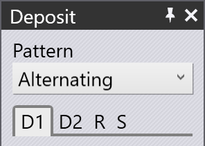
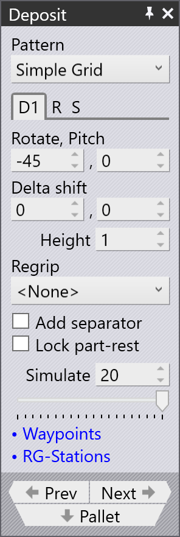
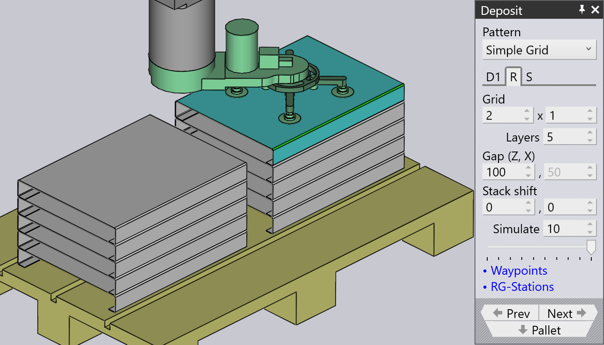

Registerkarten für die Ablage

Das Bedienfeld „Ablage“ enthält die folgenden Registerkarten:
-
Einstellungen für die Werkstückablage (D1, D2,….,Dn)
-
Wiederholraster (R)
-
Ablagesequenz (S)
Registerkarte für Werkstückablageeinstellungen (D1)

Verwenden Sie die Registerkarten D1, D2 usw., um die Einstellungen für das Ablegen der Werkstücke auf der Ablagepalette festzulegen.
Rotate, Pitch
Mit den Optionen Rotate, Pitch wird die Ausrichtung des Werkstücks am Ablagepunkt festgelegt, indem seine Drehposition um die vertikale Achse und sein Neigungswinkel um die Querachse definiert werden.

Delta Shift
Mit der Option Delta Shift wird jedes nachfolgende Werkstück relativ zum darunterliegenden Werkstück versetzt. Unten sehen Sie einen Versatz von +15 mm in X-Richtung. Dadurch werden die Werkstücke dicht und stabil nebeneinander gestapelt.

Height
Der Parameter Height legt die Höhe über dem Stapel fest, aus der das Werkstück freigegeben wird. Beim Aufsetzen auf den Stapel fällt das Werkstück um diese Strecke nach unten.
Das Ablagebedienfeld wird außerdem in den folgenden Abschnitten behandelt:
Simulate
Mit der Option Simulate können Sie die Reihenfolge nachvollziehen, in der die einzelnen Werkstücke auf der Palette abgelegt werden. Die Anzahl der Lagen und das für die Ablage verwendete Raster bestimmen, wie viele Werkstücke simuliert werden. Sie können die Simulation der Werkstückablage anzeigen, indem Sie den Simulationsschieberegler vor- und zurückbewegen.
Wiederholraster (R)
Mit der oben gezeigten Registerkarte D1 wird die Ausrichtung des ersten Werkstücks der Ablage festgelegt. Anschließend werden die Einstellungen auf der Registerkarte „Wiederholraster“ verwendet, um diese Ausrichtung auf ein Raster aus Reihen (Z), Spalten (X) und Lagen zu übertragen.

-
Mit den Einstellungen für das Raster legen Sie die Anzahl der Spalten und Reihen der Ablage fest.
-
Mit der Einstellung Layers legen Sie fest, wie viele Werkstücke in jedem Stapel übereinanderliegen.
-
Mit den Einstellungen Gap (Z, X) legen Sie den Abstand zwischen aufeinanderfolgenden Spalten oder Reihen fest. Wenn Sie den Wert auf 0 setzen, liegen die Reihen oder Spalten direkt aneinander.
-
Mit den Einstellungen Stack shift können Sie den gesamten Stapel aus allen Werkstücken von der Mitte der Palette weg verschieben.
Ablagesequenz (S)
Auf der Registerkarte Sequenz legen Sie die Reihenfolge fest, in der die Werkstücke abgelegt werden. Die Einstellungen dieser Registerkarte sind in der Abbildung dargestellt. In diesem Beispiel gibt es zwei Ablageausrichtungen, D1 und D2, und entsprechend zwei Sätze von Sequenzeinstellungen. Das bedeutet, dass die Lagen für D1 an einer Ecke beginnen können, während die Lagen für D2 an einer anderen Ecke starten können.

-
Für die Einstellung Stack stehen zwei Optionen zur Verfügung: By Layer oder By Pile. In diesem Beispiel werden bei der Stapelung nach Lage beide nebeneinanderliegenden Stapel gleichzeitig aufgebaut. Das bedeutet, dass die Werkstücke abwechselnd in Stapel 1, Stapel 2, Stapel 1, Stapel 2 usw. abgelegt werden. Dadurch wachsen beide Stapel gleichzeitig in die Höhe. Bei der stapelweisen Ablage werden zunächst alle Werkstücke des linken Stapels abgelegt, bevor Werkstücke im rechten Stapel abgelegt werden.
-
Mit den Einstellungen für die Ecke Start und den Pfad Path legen Sie bei mehreren Reihen oder Spalten fest, an welcher Ecke die Stapelung beginnt und ob sie anschließend Reihe für Reihe oder Spalte für Spalte erfolgt. Dies kann besonders bei einem nicht zentrierten Greifer hilfreich sein, da eine andere Startposition zu einer Kollision zwischen dem Greifer und dem zuvor abgelegten Werkstück führen kann.


-
Die Abbildung zeigt ein Beispiel, bei dem die Ablage an der hinteren rechten Ecke beginnt und zunächst in X-Richtung erfolgt. Die Zahlen 1, 2, 3 und 4 geben die Reihenfolge der Ablagen innerhalb dieser Lage an. Würde die Ablage an der unteren vorderen linken Ecke beginnen (Standardeinstellung), käme es beim Ablegen des zweiten Werkstücks in der Lage zu einer Kollision zwischen Greifer und zuvor abgelegtem Werkstück, da der Greifer außermittig über die Werkstückgrenzen hinausragt.
-
Mit den Simulationseinstellungen (sowohl dem Drehfeld als auch dem Schieberegler) können Sie die Ablagen durchlaufen und die Reihenfolge auf der Palette anzeigen. Dies ist besonders hilfreich, wenn Sie die Einstellungen für die Startecke und den Pfad anpassen. In der obigen Abbildung ist die Ablage von Werkstück 17 (von 20) zu sehen. Wenn Sie den Schieberegler nach rechts bewegen oder den Wert im Eingabefeld „Simulieren“ anpassen, können Sie die Greiferpositionen für die Ablagen der Werkstücke 18, 19 und 20 anzeigen.